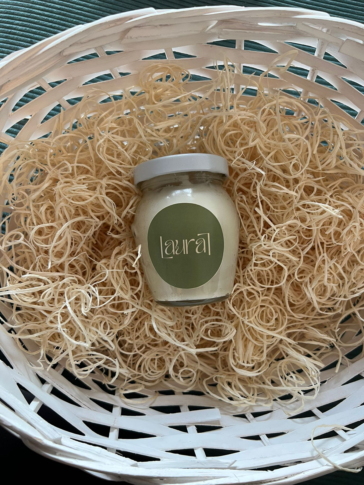
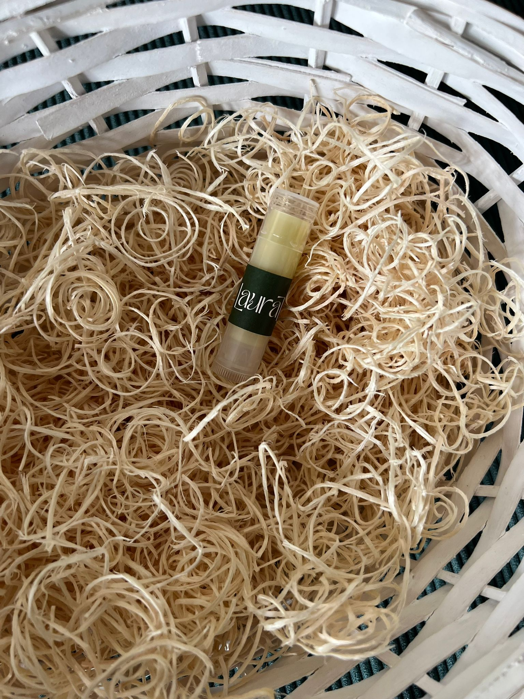

100% přírodní kosmetika bez zbytečností

Lesk na rty
Přirozený lesk s hydratací. Jemný třpyt a ochranný filtr v jednom produktu. Pouze 6 přírodních ingrediencí.

Tělové máslo
Jednoduchá péče pro vaši pokožku. Pouze 5 přírodních ingrediencí, které vyživují a chrání. Ideální pro suchou a citlivou pokožku.

Balzám na rty
Výživa a ochrana pro každodenní péči. Pouze 3 přírodní ingredience. Chrání před větrem a chladem.